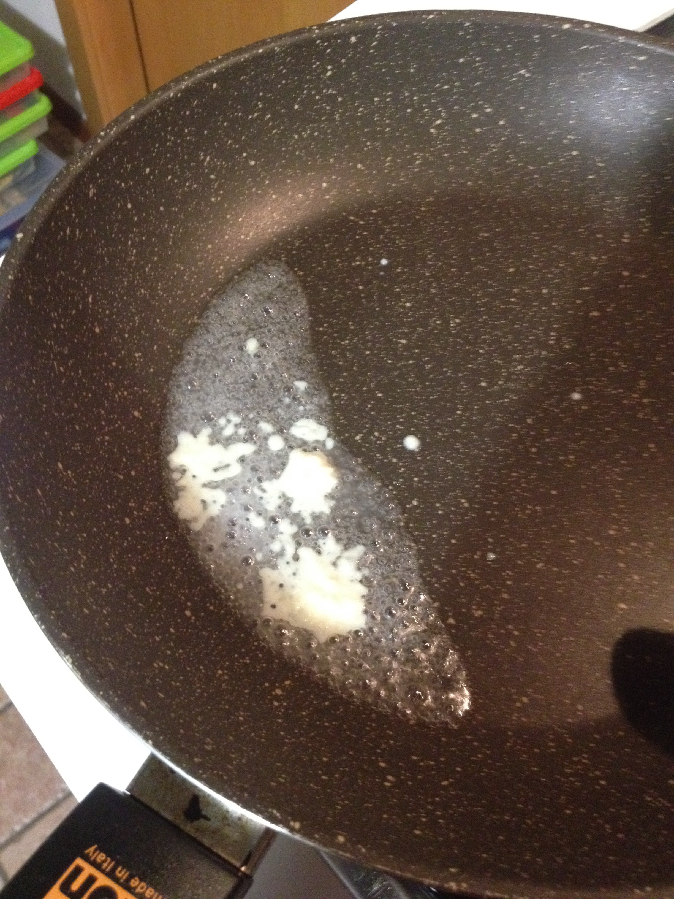
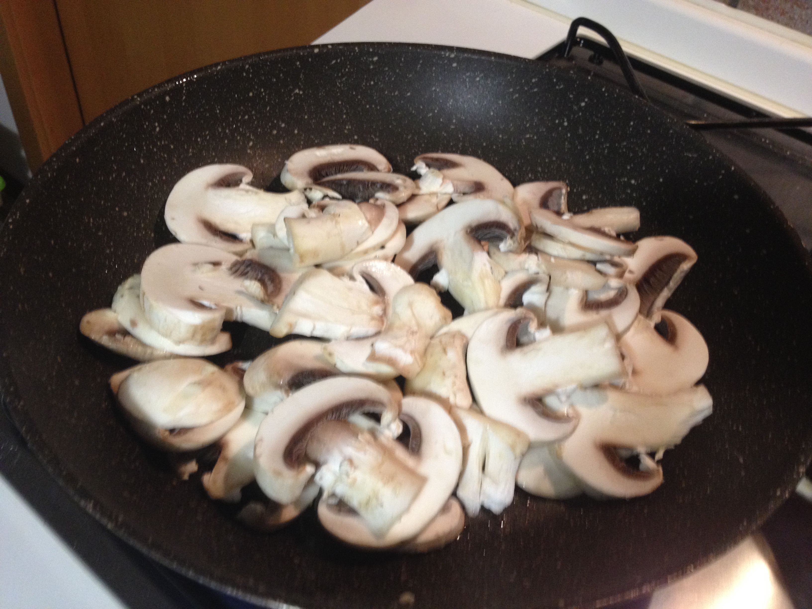
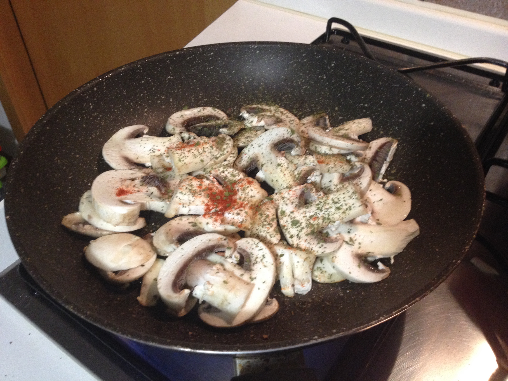

Sauté champignons¶
- Serves: 2
- Type: side dish
Note¶
This is a very simple side dish that is one of my favourites. If you want you can even add a few tablespoons of chicken broth (to keep it low carb) or white wine to make them tastier.
Ingredients¶
- 10 sliced champignons
- 2 garlic cloves
- Salt and pepper to taste
- 1 teaspoon ground paprika
- 1 tablespoon butter
- 1 teaspoon dry parsley
- 100 ml chicken broth or white wine (optional)
Steps¶
Melt the butter in a skillet pan, add the garlic and stir fry it
Stir fry the garlic in melted butter
Add the sliced champignons
Add the champignons
Add the spices and let it cook for a few minutes (approx 10 minutes) with the lid on, sometimes stir delicately and add if you want some chicken broth or white wine.
Add the spices and cook
Serve as side dish